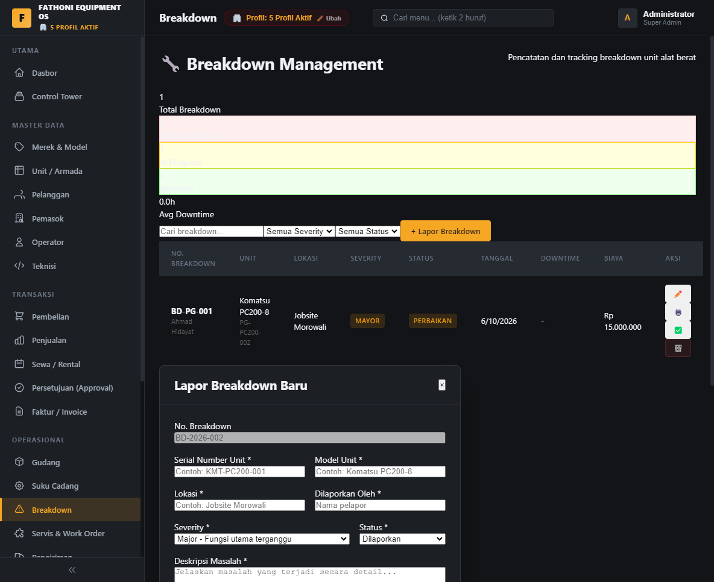

FATHONI EQUIPMENT OS 3.0.5 · Panduan Menu · 13 Oktober 2026
Panduan Menu — Servis & Work Order
Kelompok sidebar
Operasional
Alamat
#/service (klik menu Servis & Work Order di sidebar)
Peran yang melihat
Super Admin, Teknisi
Mode bisnis
tidak disaring mode — selalu tampil selama peran memenuhi
Layar dipotret
1
Form dipotret
Buka Work Order Servis Baru
1. Kegunaan menu ini
Work order bengkel (berkala 250/500/1000/2000 jam, repair, inspeksi) dengan tampilan Kanban dan Tabel. Penutupan work order dilakukan lewat jendela "Selesaikan Servis" yang meminta suku cadang dan biaya aktual.
2. Layar ketika dibuka
Servis & Work Order ketika dibuka

servis-layar.png — 1184×967 piksel, 118 KB.
Judul di layar: Work Order & Servis Alat Berat
Subjudul: Pencatatan servis berkala, perbaikan breakdown, pemeliharaan preventif, dan monitoring mekanik
Kartu ringkasan di bagian atas (angka di gambar dari data contoh):
PEKERJAAN AKTIF BERJALAN — 1 Unit Dalam Penanganan Mekanik
MENUNGGU SPAREPART — 0 Unit Unit Tertahan Part Indent
SERVIS SELESAI BULAN INI — 0 Unit Armada Siap Operasi Kembali
Kolom yang ada di luar form (pencarian/pendaftar):
teks — Cari WO, model unit, mekanik...
3. Form satu per satu, kolom demi kolom
Urutan kolom, nama label, tanda wajib, dan isi bawaan di bawah ini dibaca dari layar yang dipotret, bukan dari kode sumber. Tanda * adalah kolom yang memang ditahan kosong oleh aplikasi.
Form “Buka Work Order Servis Baru”
Dibuka dengan menekan tombol Buka Work Order Servis.
servis-buka-work-order.png — 1184×967 piksel, 118 KB.
Lebar jendela 540 px. Seluruh kolom muat tanpa menggulir pada jendela tinggi 980 px; pada jendela yang lebih pendek bagian bawah tetap perlu digulir.
Label di layar
Jenis kolom
Isi saat jendela baru dibuka
Pilihan dropdown / teks bantu
Nomor Work Order *
teks
WO-2026-002
-
Tipe Servis
dropdown (6 pilihan)
PERIODIC_250H
Servis Berkala 250 Jam (Oli & Filter); Servis Berkala 500 Jam (Filter Komplit); Servis Berkala 1000 Jam (Major Check); Breakdown Repair (Kerusakan Lapangan); Overhaul Komponen; Inspeksi Pra-Kirim (PDI)
Pilih Unit (AVAILABLE/ON_PROJECT) *
dropdown (3 pilihan)
kosong
-- Pilih Unit --; Komatsu PC200-8 - SN: PG-PC200-002; SANY SY215C - SN: PG-SY215-001
Rincian kerusakan atau daftar part yang perlu diganti...
-
Wajib diisi: Nomor Work Order, Pilih Unit (AVAILABLE/ON_PROJECT), Pelanggan (Pilih dari Master), Teknisi / Mekanik
Tombol di kaki jendela: Batal · Terbitkan Work Order
4. Setelah disimpan — efek ke menu lain
Yang terjadi di belakang layar
Memindahkan work order ke "Sedang Berjalan" mengubah unit menjadi MAINTENANCE di menu Unit.
Menyelesaikan servis: status COMPLETED + tanggal selesai, setiap suku cadang yang dipakai keluar dari stok dan tercatat sebagai mutasi BARANG KELUAR, unit kembali AVAILABLE, Hour Meter unit dinaikkan ke pembacaan work order bila lebih besar, "Jam servis terakhir" ikut bergerak sehingga siklus servis berikutnya benar, dan biaya aktual menjadi invoice SERVICE.
Pembacaan meter yang MUNDUR terhadap unit tidak pernah diambil: hour meter dibiarkan apa adanya, sesuai prosedur koreksi (T4).
Servis selesai juga memperbaiki tampilan "Sedang Berjalan" di Servis dan Control Tower.
5. Perlu diketahui (apa adanya)
Batasan dan cacat yang terverifikasi di 3.0.5
"Teknisi / Mekanik *" teks bebas, tidak mengambil nama dari menu Teknisi.
Tiga belas jalur penolakan memakai `alert`; penolakan karena HM atau nama teknisi tidak valid tidak menunjuk kolom yang dimaksud.
Sebelum 3.0.3, servis selesai tidak menaikkan Hour Meter unit dan tidak menulis jam servis terakhir (diperbaiki pada T3).